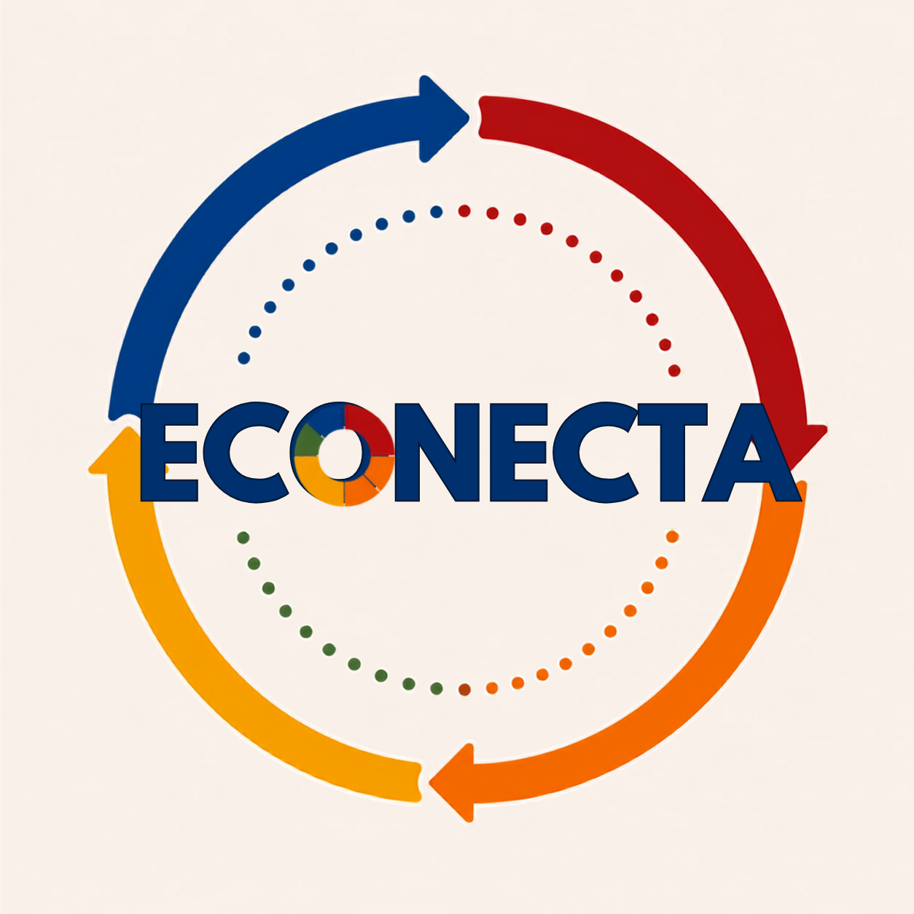

Pino sólido = achado pelo nome ou endereço exato. Pino tracejado = aproximado. Quem não tem pino aparece na Lista como "sem posição".
Confirmados: ver contagem após carregar.
Com a sincronização ligada (☁ no topo da tela), o que o grupo cadastra ou move aparece para todos. Sem internet, as alterações ficam salvas no aparelho e são enviadas quando a conexão voltar. O backup é uma cópia de segurança.